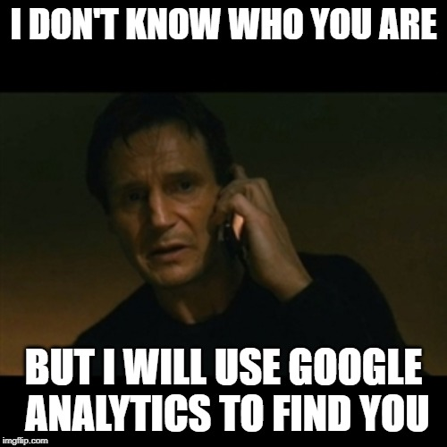
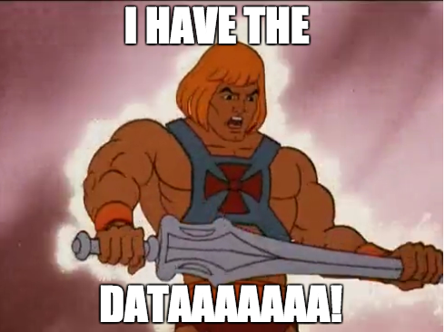
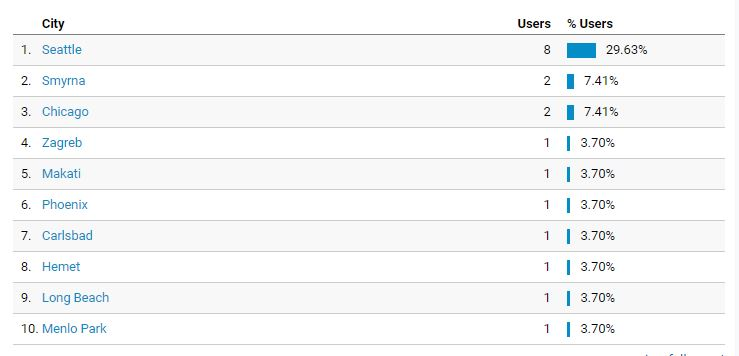

Where did you come from?
 If Liam Neeson doesn't find you, Google Analytics will.Ever thought about your digital footprint? What about what kind of information you are providing to a website when you click into the page? As a web developer, I do because I want to make sure that I'm finding my audience.
Nice to Meet You
For this class, we've been using Google Analytics to track and see what kind of traffic we get on our blog. I can see what language, what countries, and how many people have either looked at my site or are currently online looking at it while I "look at them." Now given that this is a class project, I haven't really promoted this blog or told many people about what I've been doing so I didn't expect many stats for me to study. And when I did look, I was right.
But after realizing that, I tried a new approach. Update my Facebook status to include this website & see what happens. This should return some hits & information. I have friends and family around the world so I expect the majority of the people to click will be mid 30s to early 50s. They will be curious about the project and probably expect pictures of me doing something outdoorsy with a drink in hand. I fully expect to disappoint them there but excite them about some new information.
Where in the world is Carmen Sandiego?
After posting up my blog & asking some friends to take pity on me and click, I was pleasantly pleased and slightly surprised with the results.
Of course I expected my results to be here in the United States but two countries stood out. Croatia and the Philippines. I don't know anyone in Croatia nor the Philippines. I expected a potential European or Australian hit. But not the Balkans nor the South Pacific. That Croatia mystery was solved when a friend of mine from Atlanta posted her pix from Dubrovnik, Croatia. *whew* Yes a small pang of relief was felt because for two seconds I really thought I was being followed by someone who was hoping to hack my account.
But the mystery of the Philippines lingers.
Thanks Mom & Dad for supporting me from Smyrna, GA!It is rather fascinating to see how this data works and also really gives one perspective on where your main audience resides. And in this case, I have a nice little fan base here in Seattle (hi guys!) and on the West Coast in general. Though I am curious who my Chicago clickers are ... I will drop the dive into you two if you send me some pizza from Lou Malnati’s. :-)
So much info. So little time.
To me this is just the tip of the iceberg about for whom I'm designing and who my audience base is. I'm looking forward to my next blog post where I get to talk about the really nitty gritty details of those who visit my site.